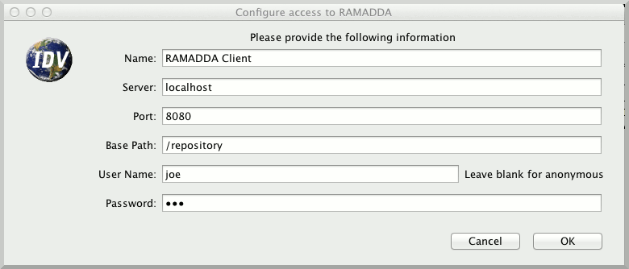
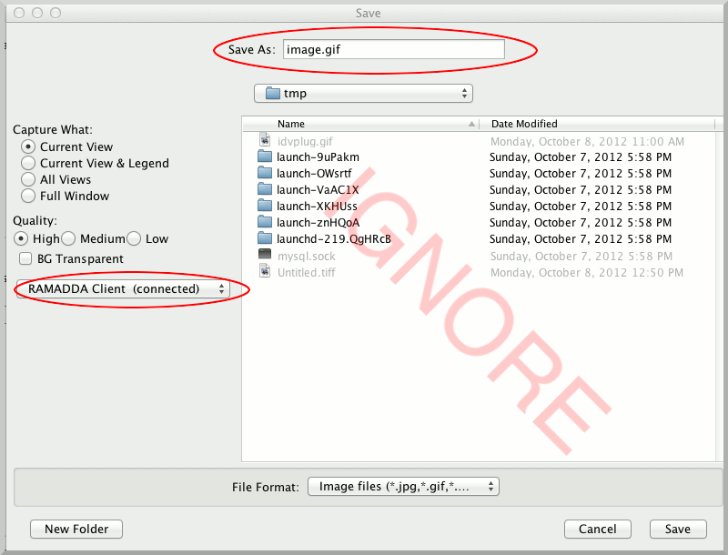
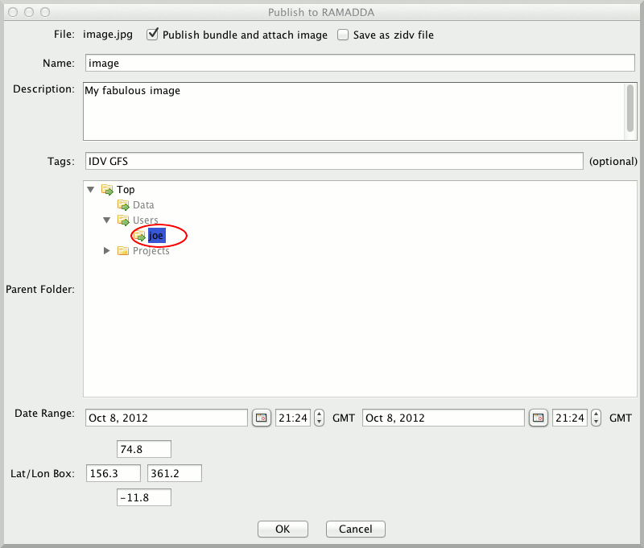
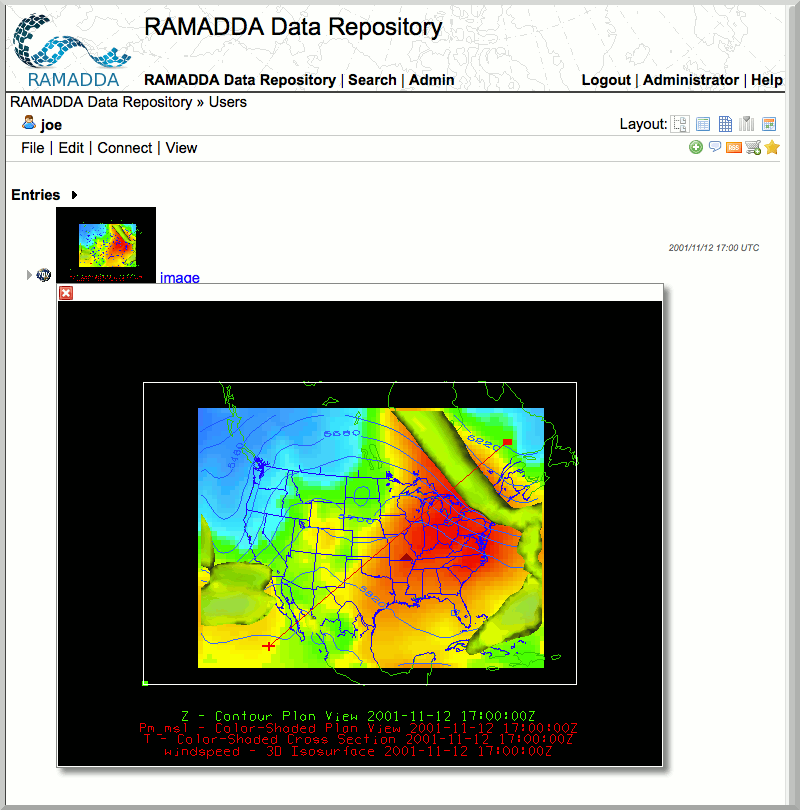

Content Publishing with the IDV RAMADDA plugin
The IDV coupled with RAMADDA is a powerful collaboration tool. IDV users can publish and share IDV content with RAMADDA. In this section we will learn how to publish and share IDV content to RAMADDA.
- Install the RAMADDA Publisher IDV plugin. In the IDV, go to [ht::menu Tools {Plugin Manager}]. This will open the Plugin Manager. Open the "Miscellaneous" node and install the RAMADDA Publisher. The IDV will now prompt you to shut down and restart the IDV.
- Create a publisher account by going to [ht::menu File Publish New {RAMADDA Publisher}] menu. Fill in the configuration information. For the purposes of this exercise, choose "localhost" for the server, and "8080" for the port. If everything went well, you should get a "Configuration Succeeded" message.

- When saving, you now have the option to publish content to RAMADDA. For example, save an image by going to [ht::menu View Capture {Image}]. Ignore the file listings on the right.

- A Publish to RAMADDA dialog will now appear. Note that RAMADDA has the concept metadata and specifically geoscience metadata that can be useful later on for search and discovery. Be sure to fill "Name", "Description" and and "Tags". Decide where you want your data to live on RAMADDA parent folder area. Also note that the date range and latitude/longitude metadata has been pre-populated although you may wish to alter this information.

- Click OK to publish your image. You should get a "Publication was successful" message.
- You can now go to your RAMADDA and see that you have successfully published your image by going to your folder (under the "Users" folder).
